FEATURE DOCUMENTARIES
| 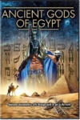 | Ancient Gods of Egypt
Year: 2017 Language: N/A Format: mp4 Resolution: 1080p |
| 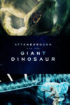 | Attenborough and the Giant Dinosaur
Year: 2016 Language: EN Format: mp4 Resolution: 1080p |
| Attenborough and the Giant Egg
Year: 2011 Language: EN Format: mp4 Resolution: 720p |
| 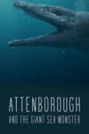 | Attenborough and the Giant Sea Monster
Year: 2024 Language: EN Format: mp4 Resolution: 1080p |
| 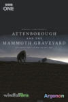 | Attenborough and the Mammoth Graveyard
Year: 2021 Language: EN Format: mp4 Resolution: 1080p |
| 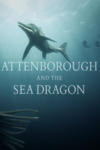 | Attenborough and the Sea Dragon
Year: 2018 Language: EN Format: mp4 Resolution: 1080p |
| 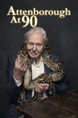 | Attenborough at 90
Year: 2016 Language: EN Format: mp4 Resolution: 720p |
| Attenborough at 90: Behind the Lens
Year: 2016 Language: EN Format: mp4 Resolution: 720p |
| 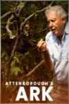 | Attenborough's Ark
Year: 2012 Language: EN Format: mp4 Resolution: 1080p |
| 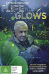 | Attenborough's Life That Glows
Year: 2016 Language: EN Format: mp4 Resolution: 720p |
| Attenborough's Paradise Birds
Year: 2015 Language: EN Format: mp4 Resolution: 1080p |
| Attenborough's Wonder of Song
Year: 2022 Language: EN Format: mp4 Resolution: 720p |
| Back to the Titanic
Year: 2020 Language: EN Format: mp4 Resolution: 1080p |
| 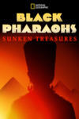 | Black Pharaohs: Sunken Treasures
Year: 2019 Language: EN Format: mp4 Resolution: 1080p |
| 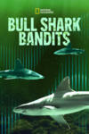 | Bull Shark Bandits
Year: 2023 Language: EN Format: mp4 Resolution: 1080p |
| 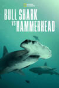 | Bull Shark vs. Hammerhead
Year: 2023 Language: EN Format: mp4 Resolution: 1080p |
| Buried Truth of the Maya
Year: 2020 Language: EN Format: mp4 Resolution: 1080p |
| 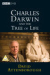 | Charles Darwin and the Tree of Life
Year: 2009 Language: EN Format: mp4 Resolution: 1080p |
| China's Megatomb Revealed
Year: 2016 Language: EN Format: mp4 Resolution: 1080p |
| Climate Change: The Facts
Year: 2019 Language: EN Format: mp4 Resolution: 1080p |
| 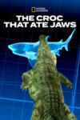 | The Croc That Ate Jaws
Year: 2021 Language: EN Format: mp4 Resolution: 1080p |
| 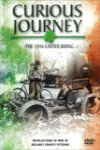 | Curious Journey
Year: 1973 Language: EN Format: mp4 Resolution: 720p |
| David Attenborough: A Life on Our Planet
Year: 2020 Language: EN Format: mp4 Resolution: 1080p |
| David Attenborough: The Early Years
Year: 2013 Language: EN Format: mp4 Resolution: 480p |
| 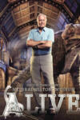 | David Attenborough's Natural History Museum Alive
Year: 2014 Language: EN Format: mp4 Resolution: 1080p |
| 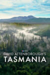 | David Attenborough's Tasmania
Year: 2018 Language: EN Format: mp4 Resolution: 1080p |
| 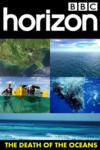 | The Death Of The Oceans?
Year: 2010 Language: EN Format: mp4 Resolution: 720p |
| Deep Web
Year: 2015 Language: EN Format: mp4 Resolution: 1080p |
| Desert Seas
Year: 2011 Language: EN Format: mp4 Resolution: 1080p |
| 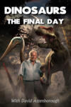 | Dinosaurs: The Final Day with David Attenborough
Year: 2022 Language: EN Format: mp4 Resolution: 1080p |
| Documenta Evita: Muerte, profanación y mito
Year: 2006 Language: EN Format: mp4 Resolution: SD |
| The Dolphins of Shark Bay
Year: 2010 Language: EN Format: mp4 Resolution: 1080p |
| Dracula Unearthed
Year: 2022 Language: EN Format: mp4 Resolution: 1080p |
| 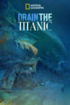 | Drain the Titanic
Year: 2015 Language: EN Format: mp4 Resolution: 1080p |
| Easter Island: Mysteries of a Lost World
Year: 2014 Language: EN Format: mp4 Resolution: 720p |
| Egypt's Lost Queens
Year: 2014 Language: EN Format: mp4 Resolution: 1080p |
| Elsa the Lioness
Year: 1961 Language: EN Format: mp4 Resolution: 480p |
| Eva Perón: Jirones de su Vida
Year: 2019 Language: ES Format: mp4 Resolution: 720p |
| Evita, The Documentary
Year: 2008 Language: EN Format: mp4 Resolution: 480p |
| Evita: La tumba sin paz
Year: 1997 Language: ES Format: mp4 Resolution: SD |
| Evita: The Unquiet Grave
Year: 1997 Language: EN Format: mp4 Resolution: SD |
| Evita: Recorré su vida y historia
Year: 2010 Language: ES Format: mp4 Resolution: 720p |
| Executions: The Rise and Fall of Capital Punishment
Year: 2025 Language: EN Format: mp4 Resolution: 1080p |
| 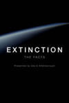 | Extinction: The Facts
Year: 2020 Language: EN Format: mp4 Resolution: 1080p |
| 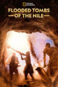 | Flooded Tombs of the Nile
Year: 2021 Language: EN Format: mp4 Resolution: 1080p |
| 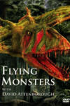 | Flying Monsters 3D with David Attenborough
Year: 2011 Language: EN Format: mp4 Resolution: 1080p |
| Frida
Year: 2024 Language: EN Format: mp4 Resolution: 1080p |
| Frida Kahlo
Year: 2020 Language: EN Format: mp4 Resolution: 1080p |
| Frida: Viva la vida
Year: 2021 Language: ES Format: mp4 Resolution: 1080p |
| 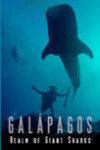 | Galapagos: Realm Of Giant Sharks
Year: 2012 Language: EN Format: mp4 Resolution: 1080p |
| Game of Sharks
Year: 2022 Language: EN Format: mp4 Resolution: 1080p |
| 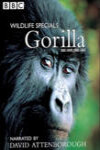 | Gorillas Revisited with Sir David Attenborough
Year: 2007 Language: EN Format: mp4 Resolution: SD |
| Great Shark Chow Down
Year: 2019 Language: EN Format: mp4 Resolution: 1080p |
| Great White Serial Killer: Fatal Christmas
Year: 2022 Language: EN Format: mp4 Resolution: 1080p |
| 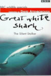 | Great White Shark
Year: 1995 Language: EN Format: mp4 Resolution: 480p |
| Great White Shark: Beyond the Cage of Fear
Year: 2013 Language: EN Format: mp4 Resolution: 1080p |
| Hang Up Your Brightest Colours
Year: 1973 Language: EN Format: mp4 Resolution: 720p |
| Holy Silence
Year: 2020 Language: EN Format: mp4 Resolution: 1080p |
| IMAX Dolphins and Whales: Tribes of the Ocean
Year: 2008 Language: EN Format: mp4 Resolution: 1080p |
| In Search of Dracula
Year: 1974 Language: EN Format: mp4 Resolution: 1080p |
| 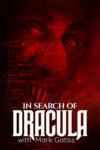 | In Search of Dracula
Year: 2020 Language: EN Format: mp4 Resolution: 1080p |
| The Kingmaker
Year: 2019 Language: EN Format: mp4 Resolution: 1080p |
| Life on Air: David Attenborough's 50 Years in Television
Year: 2002 Language: EN Format: mp4 Resolution: 720p |
| The Lost Gospels
Year: 2008 Language: EN Format: mp4 Resolution: SD |
| Lost Tombs of the Pyramids
Year: 2020 Language: EN Format: mp4 Resolution: 1080p |
| Man vs. Shark
Year: 2019 Language: EN Format: mp4 Resolution: 1080p |
| The Man Who Lost Ireland
Year: 1910 Language: EN Format: mp4 Resolution: 480p |
| 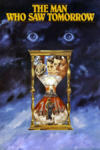 | The Man Who Saw Tomorrow
Year: 1981 Language: EN Format: mp4 Resolution: SD |
| Me, You and Doctor Who
Year: 2013 Language: EN Format: mp4 Resolution: SD |
| Memories of a Murderer: The Nilsen Tapes
Year: 2021 Language: EN Format: mp4 Resolution: 1080p |
| 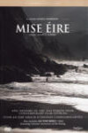 | Mise Éire
Year: 1959 Language: GA Format: mp4 Resolution: 720p |
| 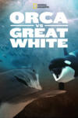 | Orca Vs. Great White
Year: 2021 Language: EN Format: mp4 Resolution: 1080p |
| The Patriot Game
Year: 1979 Language: EN Format: mp4 Resolution: SD |
| The Penguin King
Year: 2012 Language: EN Format: mp4 Resolution: 720p |
| 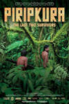 | Piripkura
Year: 2018 Language: EN Format: mp4 Resolution: 1080p |
| A Plastic Ocean
Year: 2016 Language: EN Format: mp4 Resolution: 1080p |
| Queen of Hearts
Year: 1972 Language: EN Format: mp4 Resolution: 480p |
| The Real Sherlock Holmes
Year: 2012 Language: EN Format: mp4 Resolution: 1080p |
| 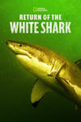 | Return of the White Shark
Year: 2023 Language: EN Format: mp4 Resolution: 1080p |

| Rose West: Born Evil?
Year: 2021 Language: GA Format: mp4 Resolution: 1080p |
| Saoirse?
Year: 1961 Language: EN Format: mp4 Resolution: 720p |
| 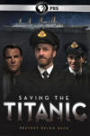 | Saving the Titanic
Year: 2012 Language: EN Format: mp4 Resolution: 1080p |
| 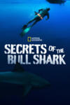 | Secrets of the Bull Shark
Year: 2020 Language: EN Format: mp4 Resolution: 720p |
| Secrets of the Saqqara Tomb
Year: 2020 Language: EN Format: mp4 Resolution: 1080p |
| The Shadow of Beál na mBláth
Year: 1991 Language: EN Format: mp4 Resolution: 480p |
| 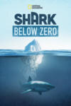 | Shark Below Zero
Year: 2023 Language: EN Format: mp4 Resolution: 1080p |
| Shark Queens
Year: 2022 Language: EN Format: mp4 Resolution: 1080p |
| 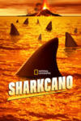 | Sharkcano
Year: 2020 Language: EN Format: mp4 Resolution: 1080p |
| Sharkcano: Hawaii
Year: 2023 Language: EN Format: mp4 Resolution: 1080p |
| Sharks of Hawaii
Year: 2021 Language: EN Format: mp4 Resolution: 1080p |
| Sharks of Lost Island
Year: 2013 Language: EN Format: mp4 Resolution: 1080p |
| Sharks of the Bermuda Triangle
Year: 2020 Language: EN Format: mp4 Resolution: 1080p |
| Sharks vs. Dolphins: Blood Battle
Year: 2020 Language: EN Format: mp4 Resolution: 1080p |
| Sky Sharks
Year: 2022 Language: EN Format: mp4 Resolution: 1080p |
| La sombra de Evita, volveré y seré millones (2010)
Year: 2011 Language: EN Format: mp4 Resolution: 720p |
| Taking Sides: Britain and the Civil War
Year: 2023 Language: EN Format: mp4 Resolution: 1080p |
| Titanic Arrogance
Year: 2011 Language: EN Format: mp4 Resolution: 1080p |
| 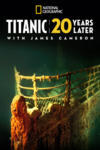 | Titanic: 20 Years Later with James Cameron
Year: 2017 Language: EN Format: mp4 Resolution: 1080p |
| Titanic: The Digital Resurrection
Year: 2025 Language: EN Format: mp4 Resolution: 1080p |
| Titanic's Final Mystery
Year: 2012 Language: EN Format: mp4 Resolution: 1080p |
| Titanic's Tragic Twin: The Britannic Disaster
Year: 2016 Language: EN Format: mp4 Resolution: 1080p |
| Tom Barry: Guerilla Days in Ireland
Year: 2011 Language: EN Format: mp4 Resolution: SD |

| Tutankhamun In Colour
Year: 2020 Language: EN Format: mp4 Resolution: 1080p |
| Valley of the Kings: The Lost Tombs
Year: 2021 Language: EN Format: mp4 Resolution: 1080p |
| Vatican: The Hidden World
Year: 2011 Language: EN Format: mp4 Resolution: 1080p |
| Waster 1916: The Enemy Files
Year: 2016 Language: EN Format: mp4 Resolution: SD |
| 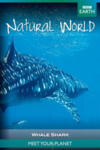 | Whale Shark
Year: 2008 Language: EN Format: mp4 Resolution: SD |
| What's a Carry On?
Year: 1998 Language: EN Format: mp4 Resolution: 720p |
| Wild Karnataka
Year: 2019 Language: EN Format: mp4 Resolution: 1080p |
| World's Biggest Bull Shark?
Year: 2021 Language: EN Format: mp4 Resolution: 1080p |
| World's Biggest Great White?
Year: 2019 Language: EN Format: mp4 Resolution: 1080p |
| World's Most Dangerous Shark
Year: 2012 Language: EN Format: mp4 Resolution: 1080p |
| The Year Earth Changed
Year: 2021 Language: EN Format: mp4 Resolution: 1080p |
| Zoo Quest in Colour
Year: 2016 Language: EN Format: mp4 Resolution: 1080p |